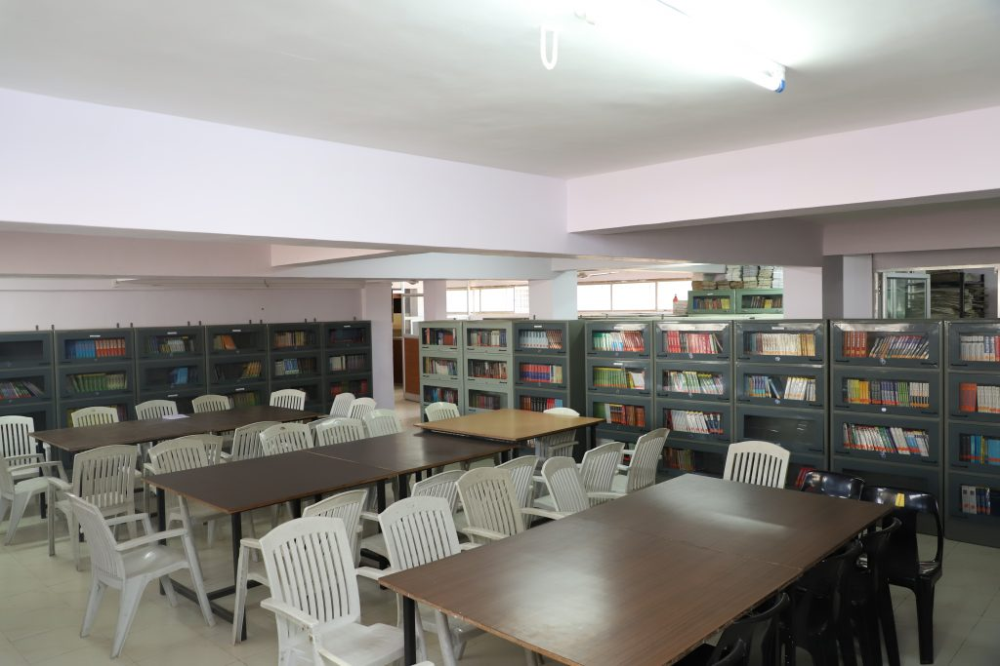
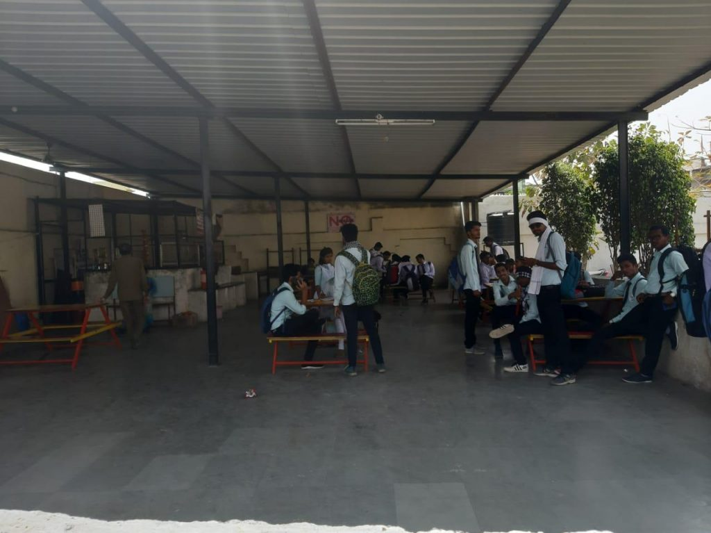
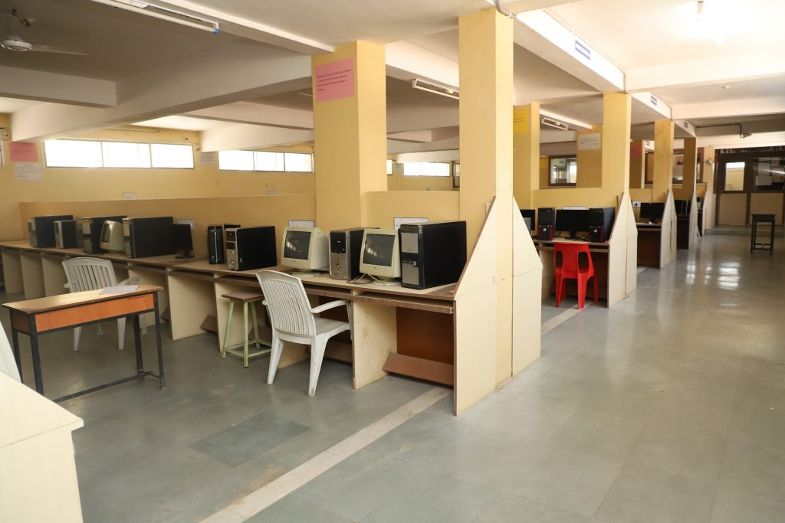
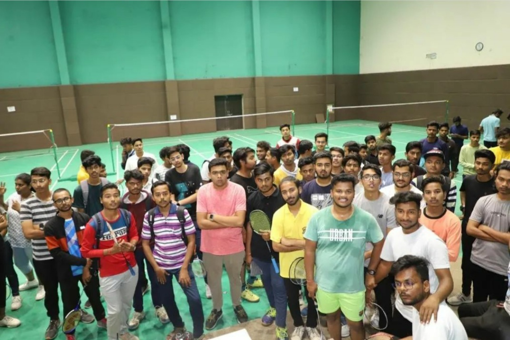
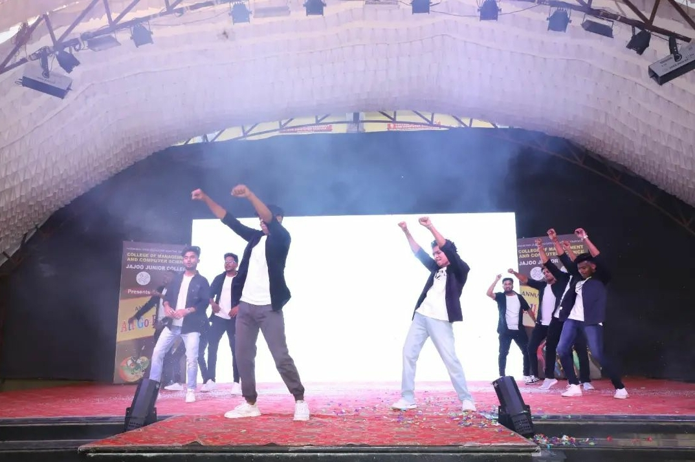

Welcome
Welcome To Jajoo College. 12th me zande gadne ke bad aap yha aaye hai. Doctor,Engineer ki is jalim duniya me aapne BCA chose karke bada accha kam kiya hai.sarcastically nahi bol the such me achhi field hai.Aur yavatmal me sub se achaa college hai apna BCA ke liye.Kisi chiej ki kimat usko khone ke bad pta chlti hai yehi such hai. 3 sal university college aur lecturers kosne ke bad ab samjh aa rha hai ki "Kuch ko choodkar"sab acche hai.Socha ye tha ki ye 3 sal ka degree course hai,lekin ye toa degree ke sath sath personality development course bhi tha ye ab samjh aa rha hai. College ke trah-trah ke lectures alg-alg function ,extra curricullam activities chije hai jo aapki as a person growth kearti hai.Hamare hisab se to sub ko ek bar "NSS camp" toa jarur jana chahiye bohot asardar sabit hota hai camp.Ye bate kisi ka bhi mann dukhane ke liye nhi likhi thi bus jo mann me tha wo juniors ko batane ke liya hi hai, likin agar phir bhi kisi ko bura laga hai toa uske liye "SORRY"
Library
Ye ak acchi jgh hai padhne ke liye trust me group study me kuch nahi hota sub se achhi padhai libarary me hi hoti hai aur apane yaha toa no.of book available hai single subjectke liye ,jo aap ko achhi se gauide krenge. Aur sirf curriculum ke hi nahi aur bhi subjects ke book available hai . Like agar MPSC,UPSC ko crack kaene ke liye bhi book available hai aur mahol bhi padhne ke liye acha hai .Fees bharne ka pura satisfaction milta hai .
Cantin
Personally hamara subse favourite area hai cantin ka ki jha hame puri freedom hai. Mobile use kaene ki ,jor se bolne ki koi kuch nahi bolega.cantin me milta bhale hi kuch nahi but dost ke sath time spend karne ka enjoy kaene ka,important bate ka discussion karne ka maja bahot aata hai. Bus prime time me lecturers aa gye toa uthana pata hai wo alag bat hai ,aur utna seh bhi sakte hai.
Lab
Obviously isko kaise bhulenge technical education le rhe hai toa ye toa ek important part hai .As a coder programming language se bhi jyada important hai patienoe jo apni lab ham ko sikha deti hai.Code ek bar me run nhi huua toa phir se try kro ,dusre method/logic se try karo ek bar toa program run ho hi jayega.Hum ise possitivly lete hai kyu ki ye hame different logic develop karne me help karta hai.Hope you all understand all fealings.
Sport
Dil ke karib ka mamla !!! mental health ke sath sath college physical health per bhi dhyan deti hai. Bohot acche se sports event hai.Maine phle bhi bola tha na college me personality development hoti hai usme sports ka bhi bada part hai.Team up karna aur sports spirit maintain karke khelna,jit ho ya har accept karna sikha deta hai sport aur event ko spice up karne ke liye hamari management,department wise trophy bhi deti hai.aur us trophy se toa sporte,me char chand lag jate hai.
Festival
Sal bhar college ke mann ka karne ke bad aati hai bari apne mann ki karne ki aur loo hai festival yani ki "All-Go-Rhythm" iske bare me jo bhi kahe,jitha bhi likhe kum hi hai is liye jyada nhi likhenge.Hamesha shant rhne walle bhi apna asli rang yha dikhate hai DJ ke samne toa aise nachte hai jaise bevde bhi nahi nachte.Patil sir bhle hi hamesha strict rhe likin annual fest me friendlly ban hi jate hai 5 minute bolkar 1/2 ghanta DJ bajaa ne dete hai aur us wkt lagta hai ki itne bhi bure nahi hai sir jithe lagte the.